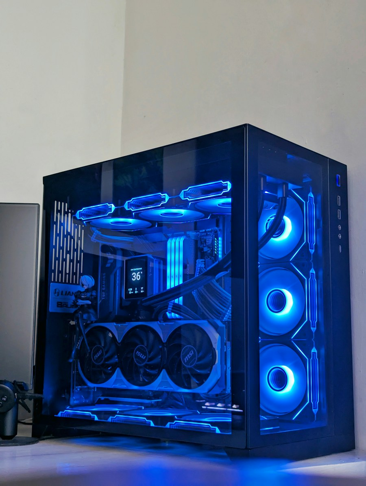

Pet Fostering Website
A call to Action website for a local pet fostering organization.
Student at Elmhurst University
Scroll down to learn more about me, my projects, and my interests!
Hello! Welcome to my page, this is where I showcase and in some cases show off some of my projects and current work! I enjoy building and creating much more than just websites. From applications to video games, I also dabble in 3D modeling and pretty much anything related to technology.
I was born and raised in Chicago, graduated from Lane Technical High School, and proceeded to try my hand in different fields before settling on commercial fiber optic installation between cell towers and data centers. I then proceeded to join the Marine Corps as a Transmissions Systems Operator, where I worked closely with radios, antennas, and network equipment to support communication operations. I am now pursuing a degree in Information Technology.
I am currently pursuing a degree in Information Technology at Elmhurst University.
While I have always been interested in technology, my love for it has been cemented as almost all of my hobbies, interests, and even career choices have revolved around it. I am always eager to learn something new, and I hope that I can continue to grow my skills so that I can apply them to real-world projects.
I hope to one day work for a company that can use my skills in a way that can positively impact the world around me.

Here are 4 websites that I have built and am currently working on GitHub!
A call to Action website for a local pet fostering organization.
A website with a little about me!
A place where you can get some news!
InvisiMug! A website for a product that is not yet released!
While my focus is on school and technology, I have many interests that fill up my time. Here is a little more about me!
I never miss a Chicago Bears game, I am also deeply invested in fantasy football and also enjoy playing Madden!
I enjoy playing strategy games like the Total War series, the Anno series, and Crusader Kings. I also dip into sports games and some fighting games if they relate to certain animes like Dragon Ball or Naruto. I also never miss a Pokemon game as I am old enough to remember Red Verison on the Game Boy Color!
I enjoy cooking and grilling. Making food for my wife and family makes my day. My dogs often reap the rewards as well!
I enjoy art; you can sometimes find me drawing or creating pieces on my iPad. I also dabble in 3D modeling and photography. I enjoy going to local art events and museums.
Like I said, I enjoy going to museums and learning about history in general. I have read loads of books on ancient cultures around the world, and I am currently doing some research on Mexico's indigenous cultures and history.
Here you can find some of my contact information. Feel free to reach out!